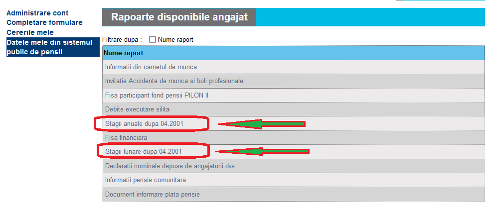
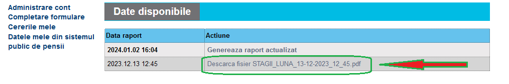

Verificare vechime in carte de munca online
pe pagina CNPP.RO - Casa Națională de Pensii Publice
Pasul I - Creare cont pe pagina CNPP.
- Se completeaza acest: FORMULAR pentru cont online;
- Dupa completarea formularului se descarca fisierul PDF;
- Formularul completat si descarcat in format PDF va fi tiparit si semnat;
- Deplasare la casa teritoriala de pensii, impreuna cu formularul semnat si cu o copie a actului de identitate a persoanei care va administra contul;
- Dupa aprobarea cererii vom primi un mail cu in link unde vom stabili parola contului;
- Logare cu e-mail si parola.
Pasul II - Generare stagii anuale sau lunare.
- Dupa ce ne-am logat, click pe DATELE MELE DIN SISTEMUL PUBLIC DE PENSII;
- Selectam una din cele doua optiuni marcate;
- 
- La final trebuie asteptat cateva secunde pana cand apare optiunea de DESCARCARE FISIER STAGII_
- 
Multumesc.